pacman::p_load(igraph, tidygraph, ggraph,
visNetwork, lubridate, clock,
tidyverse, graphlayouts,
concaveman, ggforce)Hands-on Ex05
Hands-on Ex05
1.0 Getting Started 1.1 Installing and launching R packages In this hands-on exercise, four network data modelling and visualisation packages will be installed and launched. They are igraph, tidygraph, ggraph and visNetwork. Beside these four packages, tidyverse and lubridate, an R package specially designed to handle and wrangling time data will be installed and launched too.
1.3 The Data The data sets used in this hands-on exercise is from an oil exploration and extraction company. There are two data sets. One contains the nodes data and the other contains the edges (also know as link) data. 1.3.1 The edges data GAStech-email_edges.csv which consists of two weeks of 9063 emails correspondances between 55 employees. 1.3.2 The nodes data GAStech_email_nodes.csv which consist of the names, department and title of the 55 employees. 1.3.3 Importing network data from files In this step, you will import GAStech_email_node.csv and GAStech_email_edges-v2.csv into RStudio environment by using read_csv() of readr package.
GAStech_nodes <- read_csv("data/GAStech_email_node.csv")
GAStech_edges <- read_csv("data/GAStech_email_edge-v2.csv")1.3.4 Reviewing the imported data Next, we will examine the structure of the data frame using glimpse() of dplyr.
glimpse(GAStech_edges)Rows: 9,063
Columns: 8
$ source <dbl> 43, 43, 44, 44, 44, 44, 44, 44, 44, 44, 44, 44, 26, 26, 26…
$ target <dbl> 41, 40, 51, 52, 53, 45, 44, 46, 48, 49, 47, 54, 27, 28, 29…
$ SentDate <chr> "6/1/2014", "6/1/2014", "6/1/2014", "6/1/2014", "6/1/2014"…
$ SentTime <time> 08:39:00, 08:39:00, 08:58:00, 08:58:00, 08:58:00, 08:58:0…
$ Subject <chr> "GT-SeismicProcessorPro Bug Report", "GT-SeismicProcessorP…
$ MainSubject <chr> "Work related", "Work related", "Work related", "Work rela…
$ sourceLabel <chr> "Sven.Flecha", "Sven.Flecha", "Kanon.Herrero", "Kanon.Herr…
$ targetLabel <chr> "Isak.Baza", "Lucas.Alcazar", "Felix.Resumir", "Hideki.Coc…1.3.5 Wrangling time
The code chunk below will be used to perform the changes.
GAStech_edges <- GAStech_edges %>%
mutate(SendDate = dmy(SentDate)) %>%
mutate(Weekday = wday(SentDate,
label = TRUE,
abbr = FALSE))1.3.6 Reviewing the revised date fields Table below shows the data structure of the reformatted GAStech_edges data frame
glimpse(GAStech_edges)Rows: 9,063
Columns: 10
$ source <dbl> 43, 43, 44, 44, 44, 44, 44, 44, 44, 44, 44, 44, 26, 26, 26…
$ target <dbl> 41, 40, 51, 52, 53, 45, 44, 46, 48, 49, 47, 54, 27, 28, 29…
$ SentDate <chr> "6/1/2014", "6/1/2014", "6/1/2014", "6/1/2014", "6/1/2014"…
$ SentTime <time> 08:39:00, 08:39:00, 08:58:00, 08:58:00, 08:58:00, 08:58:0…
$ Subject <chr> "GT-SeismicProcessorPro Bug Report", "GT-SeismicProcessorP…
$ MainSubject <chr> "Work related", "Work related", "Work related", "Work rela…
$ sourceLabel <chr> "Sven.Flecha", "Sven.Flecha", "Kanon.Herrero", "Kanon.Herr…
$ targetLabel <chr> "Isak.Baza", "Lucas.Alcazar", "Felix.Resumir", "Hideki.Coc…
$ SendDate <date> 2014-01-06, 2014-01-06, 2014-01-06, 2014-01-06, 2014-01-0…
$ Weekday <ord> 星期五, 星期五, 星期五, 星期五, 星期五, 星期五, 星期五, 星期五, 星期五, 星期五, 星期五, 星期五…1.3.7 Wrangling attributes A close examination of GAStech_edges data.frame reveals that it consists of individual e-mail flow records. This is not very useful for visualisation. In view of this, we will aggregate the individual by date, senders, receivers, main subject and day of the week.
GAStech_edges_aggregated <- GAStech_edges %>%
filter(MainSubject == "Work related") %>%
group_by(source, target, Weekday) %>%
summarise(Weight = n()) %>%
filter(source!=target) %>%
filter(Weight > 1) %>%
ungroup()1.3.8 Reviewing the revised edges file Table below shows the data structure of the reformatted GAStech_edges data frame
glimpse(GAStech_edges)Rows: 9,063
Columns: 10
$ source <dbl> 43, 43, 44, 44, 44, 44, 44, 44, 44, 44, 44, 44, 26, 26, 26…
$ target <dbl> 41, 40, 51, 52, 53, 45, 44, 46, 48, 49, 47, 54, 27, 28, 29…
$ SentDate <chr> "6/1/2014", "6/1/2014", "6/1/2014", "6/1/2014", "6/1/2014"…
$ SentTime <time> 08:39:00, 08:39:00, 08:58:00, 08:58:00, 08:58:00, 08:58:0…
$ Subject <chr> "GT-SeismicProcessorPro Bug Report", "GT-SeismicProcessorP…
$ MainSubject <chr> "Work related", "Work related", "Work related", "Work rela…
$ sourceLabel <chr> "Sven.Flecha", "Sven.Flecha", "Kanon.Herrero", "Kanon.Herr…
$ targetLabel <chr> "Isak.Baza", "Lucas.Alcazar", "Felix.Resumir", "Hideki.Coc…
$ SendDate <date> 2014-01-06, 2014-01-06, 2014-01-06, 2014-01-06, 2014-01-0…
$ Weekday <ord> 星期五, 星期五, 星期五, 星期五, 星期五, 星期五, 星期五, 星期五, 星期五, 星期五, 星期五, 星期五…1.4 Creating network objects using tidygraph
1.4.1 The tbl_graph object Two functions of tidygraph package can be used to create network objects, they are: tbl_graph() creates a tbl_graph network object from nodes and edges data. as_tbl_graph() converts network data and objects to a tbl_graph network. Below are network data and objects supported by as_tbl_graph()
a node data.frame and an edge data.frame, data.frame, list, matrix from base, igraph from igraph, network from network, dendrogram and hclust from stats, Node from data.tree, phylo and evonet from ape, and graphNEL, graphAM, graphBAM from graph (in Bioconductor).
1.4.2 The dplyr verbs in tidygraph activate() verb from tidygraph serves as a switch between tibbles for nodes and edges. All dplyr verbs applied to tbl_graph object are applied to the active tibble.
1.4.3 Using tbl_graph() to build tidygraph data model. In this section, you will use tbl_graph() of tinygraph package to build an tidygraph’s network graph data.frame.
Before typing the codes, you are recommended to review to reference guide of tbl_graph()
GAStech_graph <- tbl_graph(nodes = GAStech_nodes,
edges = GAStech_edges_aggregated,
directed = TRUE)1.4.4 Reviewing the output tidygraph’s graph object
GAStech_graph# A tbl_graph: 54 nodes and 1372 edges
#
# A directed multigraph with 1 component
#
# Node Data: 54 × 4 (active)
id label Department Title
<dbl> <chr> <chr> <chr>
1 1 Mat.Bramar Administration Assistant to CEO
2 2 Anda.Ribera Administration Assistant to CFO
3 3 Rachel.Pantanal Administration Assistant to CIO
4 4 Linda.Lagos Administration Assistant to COO
5 5 Ruscella.Mies.Haber Administration Assistant to Engineering Group Mana…
6 6 Carla.Forluniau Administration Assistant to IT Group Manager
7 7 Cornelia.Lais Administration Assistant to Security Group Manager
8 44 Kanon.Herrero Security Badging Office
9 45 Varja.Lagos Security Badging Office
10 46 Stenig.Fusil Security Building Control
# ℹ 44 more rows
#
# Edge Data: 1,372 × 4
from to Weekday Weight
<int> <int> <ord> <int>
1 1 2 星期日 5
2 1 2 星期一 2
3 1 2 星期二 3
# ℹ 1,369 more rows1.4.5 Reviewing the output tidygraph’s graph object The output above reveals that GAStech_graph is a tbl_graph object with 54 nodes and 4541 edges. The command also prints the first six rows of “Node Data” and the first three of “Edge Data”. It states that the Node Data is active. The notion of an active tibble within a tbl_graph object makes it possible to manipulate the data in one tibble at a time.
1.4.6 Changing the active object The nodes tibble data frame is activated by default, but you can change which tibble data frame is active with the activate() function. Thus, if we wanted to rearrange the rows in the edges tibble to list those with the highest “weight” first, we could use activate() and then arrange().
For example,
GAStech_graph %>%
activate(edges) %>%
arrange(desc(Weight))# A tbl_graph: 54 nodes and 1372 edges
#
# A directed multigraph with 1 component
#
# Edge Data: 1,372 × 4 (active)
from to Weekday Weight
<int> <int> <ord> <int>
1 40 41 星期六 13
2 41 43 星期一 11
3 35 31 星期二 10
4 40 41 星期一 10
5 40 43 星期一 10
6 36 32 星期日 9
7 40 43 星期六 9
8 41 40 星期一 9
9 19 15 星期三 8
10 35 38 星期二 8
# ℹ 1,362 more rows
#
# Node Data: 54 × 4
id label Department Title
<dbl> <chr> <chr> <chr>
1 1 Mat.Bramar Administration Assistant to CEO
2 2 Anda.Ribera Administration Assistant to CFO
3 3 Rachel.Pantanal Administration Assistant to CIO
# ℹ 51 more rows1.5 Plotting Static Network Graphs with ggraph package ggraph is an extension of ggplot2, making it easier to carry over basic ggplot skills to the design of network graphs.
As in all network graph, there are three main aspects to a ggraph’s network graph, they are:
nodes, edges and layouts. For a comprehensive discussion of each of this aspect of graph, please refer to their respective vignettes provided.
1.5.1 Plotting a basic network graph The code chunk below uses ggraph(), geom-edge_link() and geom_node_point() to plot a network graph by using GAStech_graph. Before your get started, it is advisable to read their respective reference guide at least once.
ggraph(GAStech_graph) +
geom_edge_link() +
geom_node_point()
1.5.2 Changing the default network graph theme In this section, you will use theme_graph() to remove the x and y axes. Before your get started, it is advisable to read it’s reference guide at least once.
g <- ggraph(GAStech_graph) +
geom_edge_link(aes()) +
geom_node_point(aes())
g + theme_graph()
1.5.3 Changing the coloring of the plot Furthermore, theme_graph() makes it easy to change the coloring of the plot.
g <- ggraph(GAStech_graph) +
geom_edge_link(aes(colour = 'grey50')) +
geom_node_point(aes(colour = 'grey40'))
g + theme_graph(background = 'grey10',
text_colour = 'white')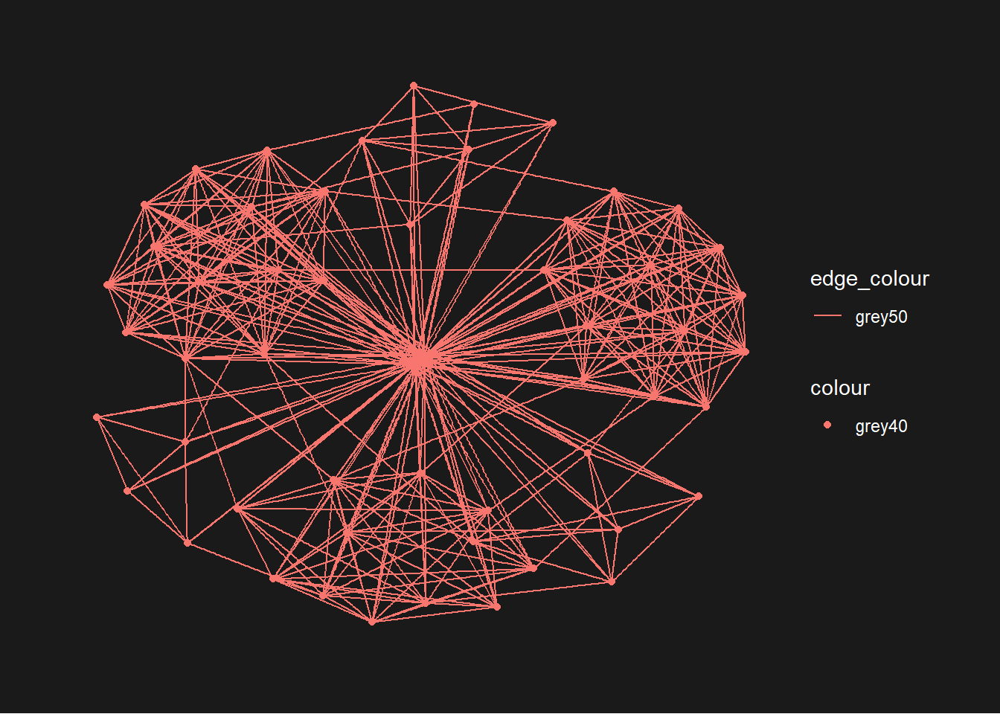
1.5.4 Working with ggraph’s layouts ggraph support many layout for standard used, they are: star, circle, nicely (default), dh, gem, graphopt, grid, mds, spahere, randomly, fr, kk, drl and lgl. Figures below and on the right show layouts supported by ggraph().
1.5.5 Fruchterman and Reingold layout The code chunks below will be used to plot the network graph using Fruchterman and Reingold layout.
g <- ggraph(GAStech_graph,
layout = "fr") +
geom_edge_link(aes()) +
geom_node_point(aes())
g + theme_graph()1.5.6 Modifying network nodes In this section, you will colour each node by referring to their respective departments.
g <- ggraph(GAStech_graph,
layout = "nicely") +
geom_edge_link(aes()) +
geom_node_point(aes(colour = Department,
size = 3))
g + theme_graph()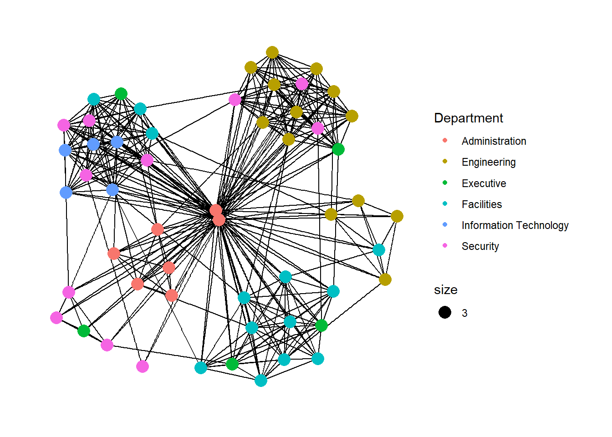
geom_node_point is equivalent in functionality to geo_point of ggplot2. It allows for simple plotting of nodes in different shapes, colours and sizes. In the codes chnuks above colour and size are used.
1.5.7 Modifying edges In the code chunk below, the thickness of the edges will be mapped with the Weight variable.
g <- ggraph(GAStech_graph,
layout = "nicely") +
geom_edge_link(aes(width=Weight),
alpha=0.2) +
scale_edge_width(range = c(0.1, 5)) +
geom_node_point(aes(colour = Department),
size = 3)
g + theme_graph()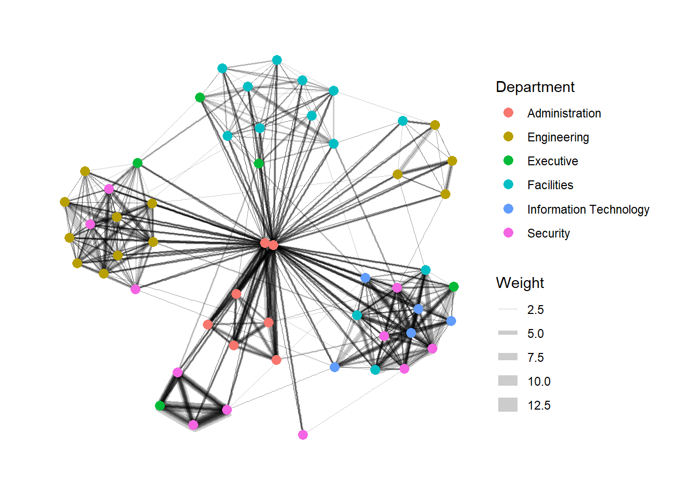
geom_edge_link draws edges in the simplest way - as straight lines between the start and end nodes. But, it can do more that that. In the example above, argument width is used to map the width of the line in proportional to the Weight attribute and argument alpha is used to introduce opacity on the line.
1.6 Creating facet graphs Another very useful feature of ggraph is faceting. In visualising network data, this technique can be used to reduce edge over-plotting in a very meaning way by spreading nodes and edges out based on their attributes. In this section, you will learn how to use faceting technique to visualise network data.
There are three functions in ggraph to implement faceting, they are:
facet_nodes() whereby edges are only draw in a panel if both terminal nodes are present here, facet_edges() whereby nodes are always drawn in al panels even if the node data contains an attribute named the same as the one used for the edge facetting, and facet_graph() faceting on two variables simultaneously.
1.6.1 Working with facet_edges() In the code chunk below, facet_edges() is used. Before getting started, it is advisable for you to read it’s reference guide at least once.
set_graph_style()
g <- ggraph(GAStech_graph,
layout = "nicely") +
geom_edge_link(aes(width=Weight),
alpha=0.2) +
scale_edge_width(range = c(0.1, 5)) +
geom_node_point(aes(colour = Department),
size = 2)
g + facet_edges(~Weekday)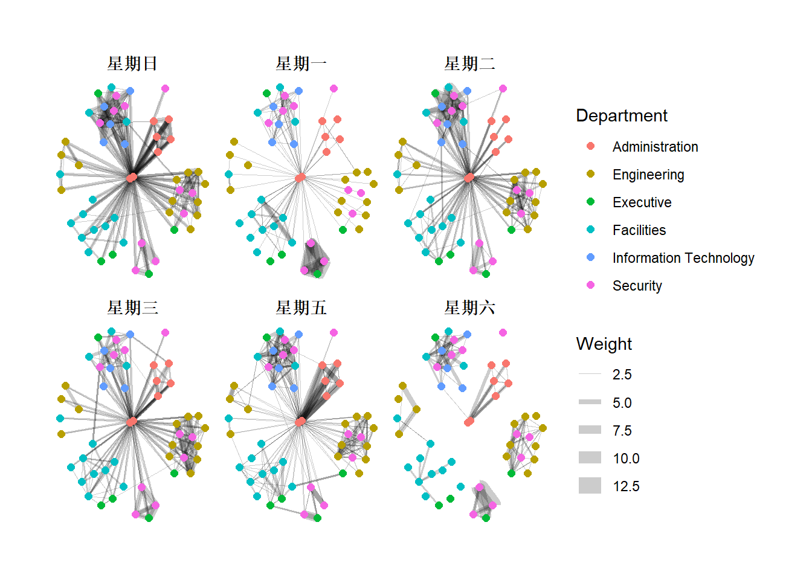
1.6.2 Working with facet_edges() The code chunk below uses theme() to change the position of the legend.
set_graph_style()
g <- ggraph(GAStech_graph,
layout = "nicely") +
geom_edge_link(aes(width=Weight),
alpha=0.2) +
scale_edge_width(range = c(0.1, 5)) +
geom_node_point(aes(colour = Department),
size = 2) +
theme(legend.position = 'bottom')
g + facet_edges(~Weekday)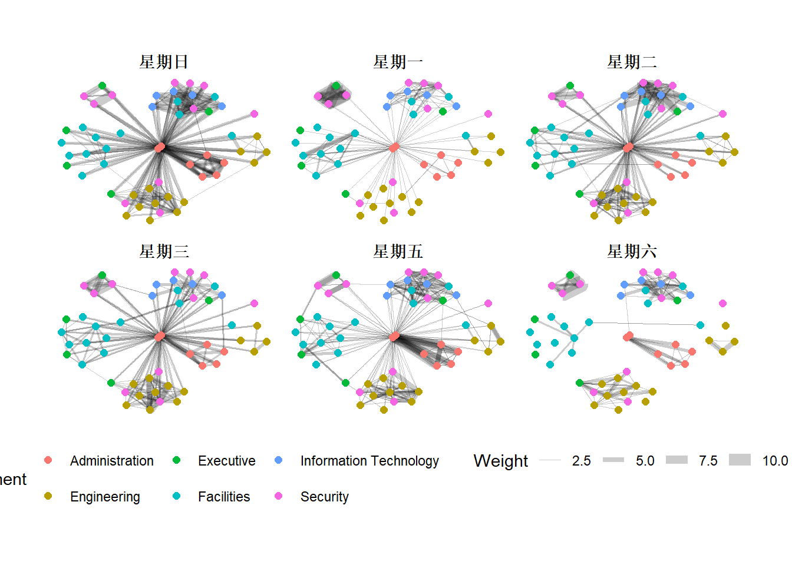
1.6.3 A framed facet graph The code chunk below adds frame to each graph.
set_graph_style()
g <- ggraph(GAStech_graph,
layout = "nicely") +
geom_edge_link(aes(width=Weight),
alpha=0.2) +
scale_edge_width(range = c(0.1, 5)) +
geom_node_point(aes(colour = Department),
size = 2)
g + facet_edges(~Weekday) +
th_foreground(foreground = "grey80",
border = TRUE) +
theme(legend.position = 'bottom')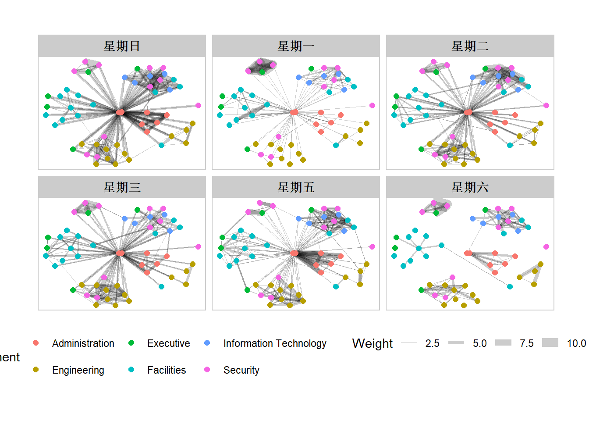
1.6.4 Working with facet_nodes() In the code chunkc below, facet_nodes() is used. Before getting started, it is advisable for you to read it’s reference guide at least once.
set_graph_style()
g <- ggraph(GAStech_graph,
layout = "nicely") +
geom_edge_link(aes(width=Weight),
alpha=0.2) +
scale_edge_width(range = c(0.1, 5)) +
geom_node_point(aes(colour = Department),
size = 2)
g + facet_nodes(~Department)+
th_foreground(foreground = "grey80",
border = TRUE) +
theme(legend.position = 'bottom')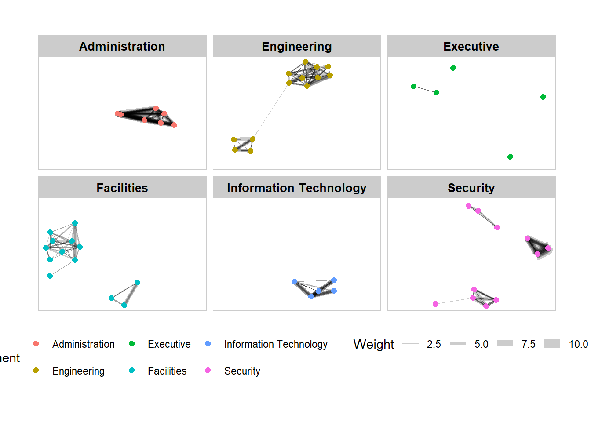
1.7 Network Metrics Analysis 1.7.1 Computing centrality indices Centrality measures are a collection of statistical indices use to describe the relative important of the actors are to a network. There are four well-known centrality measures, namely: degree, betweenness, closeness and eigenvector. It is beyond the scope of this hands-on exercise to cover the principles and mathematics of these measure here. Students are encouraged to refer to Chapter 7: Actor Prominence of A User’s Guide to Network Analysis in R to gain better understanding of theses network measures.
g <- GAStech_graph %>%
mutate(betweenness_centrality = centrality_betweenness()) %>%
ggraph(layout = "fr") +
geom_edge_link(aes(width=Weight),
alpha=0.2) +
scale_edge_width(range = c(0.1, 5)) +
geom_node_point(aes(colour = Department,
size=betweenness_centrality))
g + theme_graph()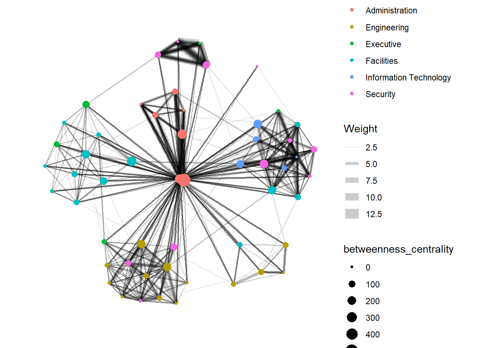
Things to learn from the code chunk above:
mutate() of dplyr is used to perform the computation. the algorithm used, on the other hand, is the centrality_betweenness() of tidygraph.
1.7.2 Visualising network metrics It is important to note that from ggraph v2.0 onward tidygraph algorithms such as centrality measures can be accessed directly in ggraph calls. This means that it is no longer necessary to precompute and store derived node and edge centrality measures on the graph in order to use them in a plot.
g <- GAStech_graph %>%
ggraph(layout = "fr") +
geom_edge_link(aes(width=Weight),
alpha=0.2) +
scale_edge_width(range = c(0.1, 5)) +
geom_node_point(aes(colour = Department,
size = centrality_betweenness()))
g + theme_graph()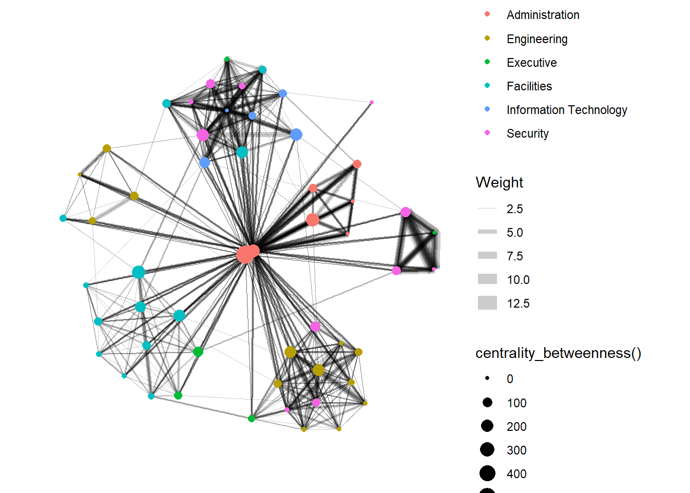
1.7.3 Visualising Community tidygraph package inherits many of the community detection algorithms imbedded into igraph and makes them available to us, including Edge-betweenness (group_edge_betweenness), Leading eigenvector (group_leading_eigen), Fast-greedy (group_fast_greedy), Louvain (group_louvain), Walktrap (group_walktrap), Label propagation (group_label_prop), InfoMAP (group_infomap), Spinglass (group_spinglass), and Optimal (group_optimal). Some community algorithms are designed to take into account direction or weight, while others ignore it. Use this link to find out more about community detection functions provided by tidygraph,
In the code chunk below group_edge_betweenness() is used.
g <- GAStech_graph %>%
mutate(community = as.factor(
group_edge_betweenness(
weights = Weight,
directed = TRUE))) %>%
ggraph(layout = "fr") +
geom_edge_link(
aes(
width=Weight),
alpha=0.2) +
scale_edge_width(
range = c(0.1, 5)) +
geom_node_point(
aes(colour = community))
g + theme_graph()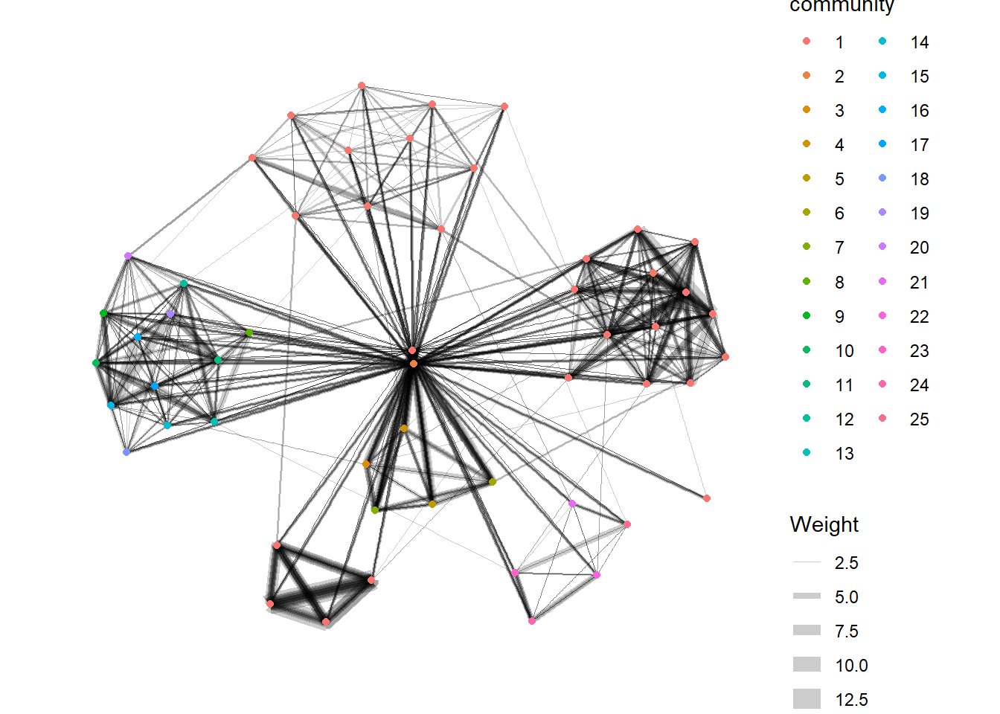
In order to support effective visual investigation, the community network above has been revised by using geom_mark_hull() of ggforce package.
g <- GAStech_graph %>%
activate(nodes) %>%
mutate(community = as.factor(
group_optimal(weights = Weight)),
betweenness_measure = centrality_betweenness()) %>%
ggraph(layout = "fr") +
geom_mark_hull(
aes(x, y,
group = community,
fill = community),
alpha = 0.2,
expand = unit(0.3, "cm"), # Expand
radius = unit(0.3, "cm") # Smoothness
) +
geom_edge_link(aes(width=Weight),
alpha=0.2) +
scale_edge_width(range = c(0.1, 5)) +
geom_node_point(aes(fill = Department,
size = betweenness_measure),
color = "black",
shape = 21)
g + theme_graph()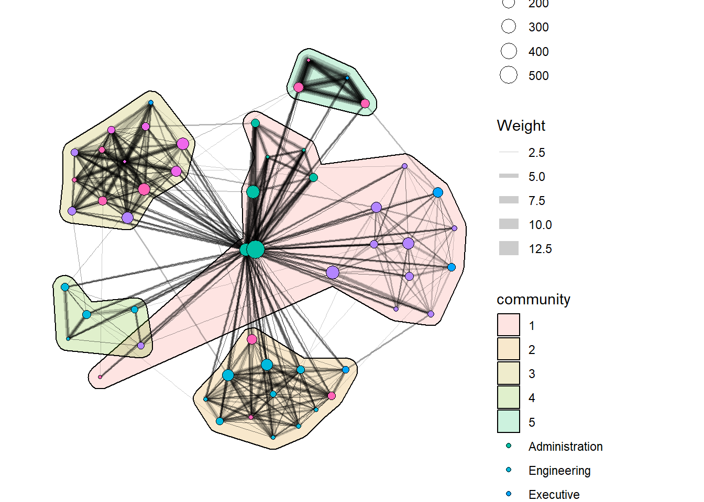
1.8 Building Interactive Network Graph with visNetwork visNetwork() is a R package for network visualization, using vis.js javascript library.
visNetwork() function uses a nodes list and edges list to create an interactive graph.
The nodes list must include an “id” column, and the edge list must have “from” and “to” columns. The function also plots the labels for the nodes, using the names of the actors from the “label” column in the node list. The resulting graph is fun to play around with.
You can move the nodes and the graph will use an algorithm to keep the nodes properly spaced. You can also zoom in and out on the plot and move it around to re-center it.
1.8.1 Data preparation Before we can plot the interactive network graph, we need to prepare the data model by using the code chunk below.
GAStech_edges_aggregated <- GAStech_edges %>%
left_join(GAStech_nodes, by = c("sourceLabel" = "label")) %>%
rename(from = id) %>%
left_join(GAStech_nodes, by = c("targetLabel" = "label")) %>%
rename(to = id) %>%
filter(MainSubject == "Work related") %>%
group_by(from, to) %>%
summarise(weight = n()) %>%
filter(from!=to) %>%
filter(weight > 1) %>%
ungroup()1.8.2 Plotting the first interactive network graph The code chunk below will be used to plot an interactive network graph by using the data prepared.
visNetwork(GAStech_nodes,
GAStech_edges_aggregated)1.8.3 Working with layout In the code chunk below, Fruchterman and Reingold layout is used.
visNetwork(GAStech_nodes,
GAStech_edges_aggregated) %>%
visIgraphLayout(layout = "layout_with_fr") 1.8.4 Working with visual attributes - Nodes visNetwork() looks for a field called “group” in the nodes object and colour the nodes according to the values of the group field.
The code chunk below rename Department field to group.
GAStech_nodes <- GAStech_nodes %>%
rename(group = Department) When we rerun the code chunk below, visNetwork shades the nodes by assigning unique colour to each category in the group field.
visNetwork(GAStech_nodes,
GAStech_edges_aggregated) %>%
visIgraphLayout(layout = "layout_with_fr") %>%
visLegend() %>%
visLayout(randomSeed = 123)1.8.5 Working with visual attributes - Edges In the code run below visEdges() is used to symbolise the edges. - The argument arrows is used to define where to place the arrow. - The smooth argument is used to plot the edges using a smooth curve.
1.8.5 Working with visual attributes - Edges In the code run below visEdges() is used to symbolise the edges. - The argument arrows is used to define where to place the arrow. - The smooth argument is used to plot the edges using a smooth curve.
visNetwork(GAStech_nodes,
GAStech_edges_aggregated) %>%
visIgraphLayout(layout = "layout_with_fr") %>%
visEdges(arrows = "to",
smooth = list(enabled = TRUE,
type = "curvedCW")) %>%
visLegend() %>%
visLayout(randomSeed = 123)1.8.6 Interactivity In the code chunk below, visOptions() is used to incorporate interactivity features in the data visualisation.
The argument highlightNearest highlights nearest when clicking a node. The argument nodesIdSelection adds an id node selection creating an HTML select element.
visNetwork(GAStech_nodes,
GAStech_edges_aggregated) %>%
visIgraphLayout(layout = "layout_with_fr") %>%
visOptions(highlightNearest = TRUE,
nodesIdSelection = TRUE) %>%
visLegend() %>%
visLayout(randomSeed = 123)